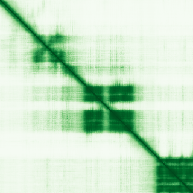
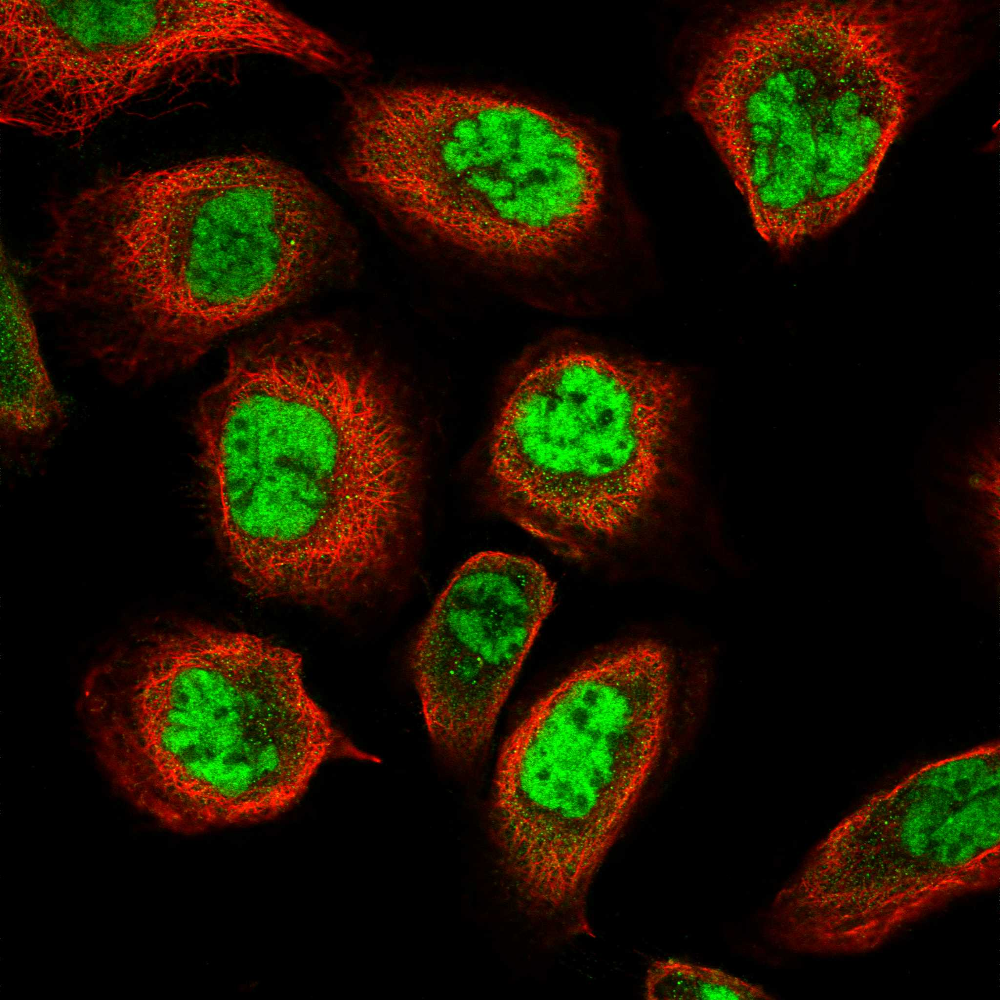

type: protein-evaluation gene: "CD2BP2" date: 2026-06-01 tags: [protein-scout, nucleoplasm, evaluation] status: scored ---
CD2BP2 核蛋白评估报告
1. 基本信息
| 项目 | 内容 |
|---|---|
| 基因名 / 别名 | CD2BP2 / KIAA1178 |
| 蛋白全名 | CD2 antigen cytoplasmic tail-binding protein 2 |
| 蛋白大小 | 341 aa / 37.6 kDa |
| UniProt ID | O95400 |
2. 评分总览
| 维度 | 得分 | 新权重 | 加权后 | 关键证据摘要 |
|---|---|---|---|---|
| 核定位特异性 | 8/10 | x4 | 32.0 | UniProt Nucleus, GO nucleoplasm/nuclear speck/U5 snRNP, HPA Nuclear speckles (Enhanced) |
| 蛋白大小 | 8/10 | x1 | 8.0 | 341 aa, 37.6 kDa，中等偏小 |
| 研究新颖性 | 8/10 | x5 | 40.0 | PubMed strict=32, broad=38 |
| 三维结构 | 6/10 | x3 | 18.0 | AlphaFold pLDDT 69.0；PDB 10 个结构含全长 EM |

| 调控结构域 | 3/10 | x2 | 6.0 | GYF domain (proline-rich binding)，非经典染色质结构域 |
| PPI 网络 | 5/10 | x3 | 15.0 | U5 snRNP/剪接体核心组分，STRONG experimental STRING + IntAct coIP |
| 加权总分 | 119/180** | |||
| 互证加分 | +0.0 | |||
| 归一化总分 (÷1.83) | 65.0/100** |
3. 详细分析
3.1 核定位证据
| 来源 | 定位 | 可信度 |
|---|---|---|
| UniProt | Nucleus, Cytoplasm (subcellular location annotated, no evidence codes) | 中 |
| GO-CC | nucleoplasm (IDA:BHF-UCL), nuclear speck (IDA:HPA), fibrillar center (IDA:HPA), nucleus (IDA:BHF-UCL), U5 snRNP (IDA:BHF-UCL), cytoplasm, cytosol | 高（多来源 IDA） |
| HPA IF | Nuclear speckles, Cytosol (Enhanced 可靠性 -- 最高级别) | 高 |
| Literature | CD2BP2 又名 U5-52K，是 U5 snRNP 的核心组分，定位于核质/nuclear speckles，参与 pre-mRNA 剪接 | 强 |
HPA IF 状态: IF available -- HPA 可靠性 Enhanced（最高级别），主定位 Nuclear speckles。

结论: CD2BP2 是 U5 snRNP 核心组分，核定位证据充分（HPA Enhanced + GO 多来源 IDA + UniProt 注释），HPA IF 显示典型的 nuclear speckle 分布模式。
3.2 结构与数据源
| 指标 | 数值 |
|---|---|
| AlphaFold | AF-O95400-F1 |
| 平均 pLDDT | 69.0 |
| pLDDT >90 | 8.8% |
| pLDDT 70-90 | 47.8% |
| pLDDT <50 | 24.6% |
| PDB | 10 个结构 (1GYF/1L2Z/1SYX/4BWS GYF domain; 8Q7Q/8Q7V/8Q7W/8Q7X/8Q91/8RC0 全长 spliceosome EM) |
AlphaFold PAE 状态: PAE 已下载，C 端 GYF domain (aa 280-341) 预测良好，但整体蛋白有显著无序区域。多个 cryo-EM 结构包含全长 CD2BP2 在 spliceosome 中的构象。
3.3 研究现状
| 指标 | 数值 |
|---|---|
| PubMed strict (Title/Abstract) | 32 |
| PubMed broad | 38 |
| 别名 | KIAA1178（未用于 scoring） |
关键文献：
- PMID:39308865, "The nuclear GYF protein CD2BP2/U5-52K is required for T cell homeostasis." (Front Immunol, 2024) -- 直接关注 CD2BP2 核功能
- PMID:26082520, "The GYF domain protein CD2BP2 is critical for embryogenesis and podocyte function." (J Mol Cell Biol, 2015) -- 功能 knockout 研究
- PMID:17906334, "Investigating the functional role of CD2BP2 in T cells." (Int Immunol, 2007)
3.4 PPI 网络（三源综合）
| Partner | Source | Score/Evidence | Relevance |
|---|---|---|---|
| SNRNP200 | STRING | 0.998 (exp 0.992) | U5 snRNP 核心解旋酶 |
| TXNL4A | STRING | 0.997 (exp 0.983) | U5 snRNP 组分 |
| DDX23 | STRING | 0.996 (exp 0.867) | U5 snRNP 解旋酶 |
| PRPF6 | STRING | 0.994 (exp 0.920) | U5 snRNP 支架蛋白 |
| CD2 | STRING | 0.992 (exp 0.836) | T 细胞表面受体，命名来源 |
| SNRPB | IntAct | coIP (PMID:17353931) | Sm 核心蛋白 |
| PRPF8 | IntAct | coIP (PMID:17353931) | U5 snRNP 最大组分 |
| SNRNP40 | IntAct | coIP (PMID:17353931) | U5 snRNP 组分 |
| CD2 | UniProt | 14 experiments | T 细胞受体互作 |
| PRPF6 | UniProt | 11 experiments | U5 snRNP |
STRING 互作网络以 U5 snRNP/剪接体组分为主，实验分数极高（0.85-0.99+），反映 CD2BP2 在剪接体中的核心位置。IntAct 含多条 coIP 验证互作。UniProt 记录 25 个互作伙伴。
4. 总体评价
CD2BP2 是一个低文献量（strict=32）的 U5 snRNP 核心组分，核定位证据扎实（HPA Enhanced + GO 多 IDA），结构数据丰富（10 个 PDB，含全长 spliceosome cryo-EM），PPI 以剪接体蛋白为主导、实验验证度高。主要不足是 GYF domain 不直接参与染色质调控或转录，且 pLDDT 均值仅 69.0（N 端含较多无序区）。适合作为剪接体/核 speckle 功能的低研究热度候选跟踪。
5. 数据来源
- UniProt: https://www.uniprot.org/uniprotkb/O95400
- AlphaFold: https://alphafold.ebi.ac.uk/entry/O95400
- PubMed: https://pubmed.ncbi.nlm.nih.gov/?term=CD2BP2
- Protein Atlas: https://www.proteinatlas.org/ENSG00000169217-CD2BP2
HPA IF 图像已本地嵌入。
PAE 图像说明: AlphaFold PAE 图像已重新获取并嵌入（见下方 PAE 图像修正块）；结构判断仍结合 pLDDT 与 PAE 综合判断。
<!-- AF_PAE_REPAIR_START --> PAE 图像修正（2026-06-05）: AlphaFold 提供 predicted aligned error 图像；此前“PAE 图像暂无数据”的表述为未获取/未嵌入导致。